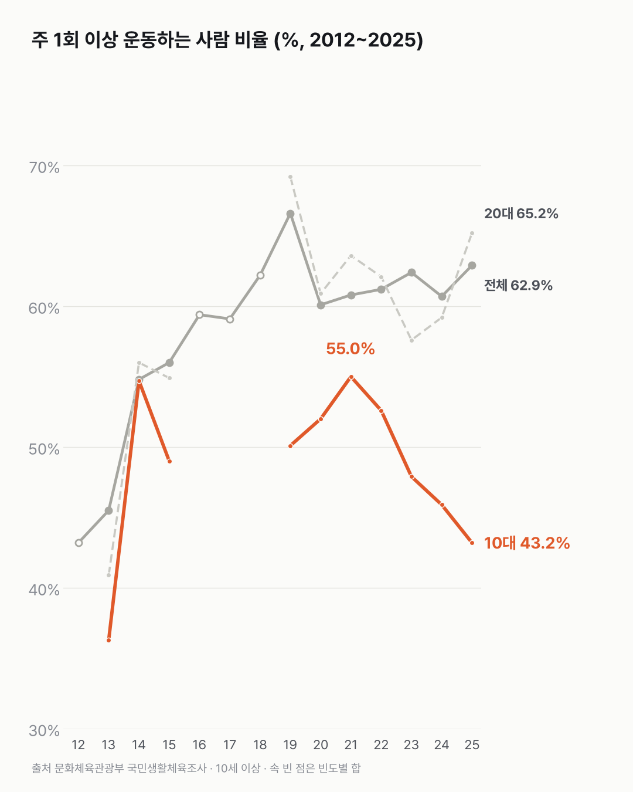
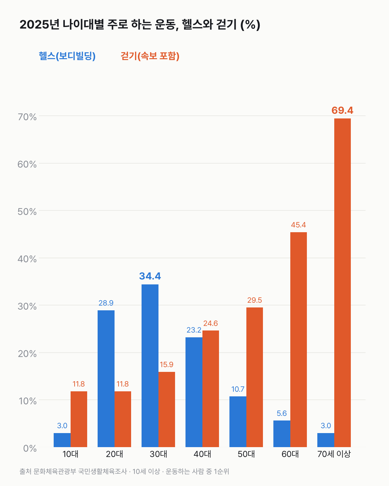

주 1회 운동하는 사람, 정말 늘었을까요
운동하는 사람은 몇 해째 제자리예요. 그 안에서 10대만 계속 줄고 있어요.

- 2025년 주 1회 이상 운동하는 사람은 62.9%예요. 2020년 이후 60~63% 사이에 머물러 있어요.
- 10대만 2021년 55.0%에서 2025년 43.2%로 4년 연속 줄어, 나이대 중 가장 낮아요.
- 20·30대는 헬스가 1위(28.9%, 34.4%)이고, 70세 이상은 69.4%가 걷기를 주로 해요.
운동하는 사람이 가장 많았던 해는 언제였을까요? 표를 거슬러 올라가면 코로나 바로 전 해가 나와요. 2019년 66.6%예요. 이듬해 60.1%로 내려온 뒤로는 60~63% 사이에서 움직였어요.
10대는 4년 내리 줄었어요. 55.0%에서 52.6%, 47.9%, 45.9%를 거쳐 43.2%가 됐어요.
나머지 나이대는 65% 안팎이에요. 2025년 20대 65.2%, 30대 67.8%, 40대 67.1%, 50대 64.2%, 60대 65.8%예요. 의외로 차이가 작았어요. 70세 이상도 59.5%예요.
주로 하는 운동은 나이에 따라 갈려요. 20·30대는 헬스 다음이 요가·필라테스예요. 40대부터는 걷기가 1위예요. 10대는 농구(24.0%)와 축구·풋살(18.1%)이 1·2위예요.

공을 차고 던지는 나이대에서만 숫자가 줄고 있어요. 줄어든 10대가 그 시간에 무엇을 하는지는 이 표가 세지 않았어요.
이 숫자는 어디서 왔나요
출처
어떻게 셌나요
- 10세 이상 약 9,000명에게 묻는 표본조사예요. 운동량은 응답자가 스스로 답해요.
- 규칙적 체육활동은 주 1회 이상, 한 번에 30분 이상 운동하는 거예요(문화체육관광부 정의). 운동 비율은 이런 사람이 전체 응답자 중 몇 %인지예요.
- 2012년과 2016~2018년은 표에 '주1회 이상' 값이 없어서, 빈도별 비율(주1회~매일)을 더해 구했어요. 차트에는 속이 빈 점으로 표시했어요.
- 나이대별 값은 2016~2018년이 없어요.
- 주 종목은 규칙적으로 운동하는 사람이 1순위로 고른 종목이에요.
한계 6가지
이 데이터로 말할 수 없는 것
- 2013→2014년 급등(45.5% → 54.8%)은 조사 방법 변화 때문일 수 있어요. 이를 확인하지 못해서 2014년 이전과 견줄 때는 조심해야 해요.
- 스스로 답한 조사예요. 실제 운동량을 잰 건 아니에요.
- 10대가 줄어든 이유는 몰라요. 학업, 학교 체육, 다른 여가 등 무엇 때문인지 이 데이터로 가를 수 없어요.
- 주 종목은 '규칙적으로 운동하는 사람' 안에서의 비율이에요. 전체 인구 중 헬스를 하는 비율과는 달라요.
- 표본조사예요. 나이대별로 1~2%p 차이는 오차일 수 있어요.
- 건강 조언은 아니에요.
새 글 나오면 받아 보기
피드 리더 앱에 이 사이트 주소를 한 번 넣어 두면, 새 글이 올라올 때 앱에 떠요. 가입이나 메일 주소는 필요 없어요.
받는 법 보기
- 피드 리더 앱을 하나 골라요. 새 글을 모아 보여 주는 앱이에요. 예를 들면 Feedly나 Inoreader가 있어요. 둘 다 무료고 웹·휴대폰에서 써요.
- 앱에서 '구독 추가'(+)를 누르고 아래 주소를 붙여 넣어요.
- 끝이에요. 새 글이 올라오면 앱 목록에 떠요.
https://protofu.github.io/opendata-insight/feed.xmlFeedly를 쓴다면 여기를 눌러 바로 추가할 수도 있어요.